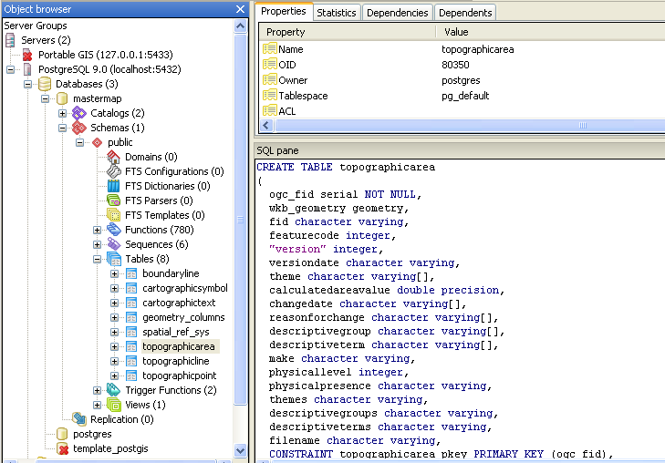
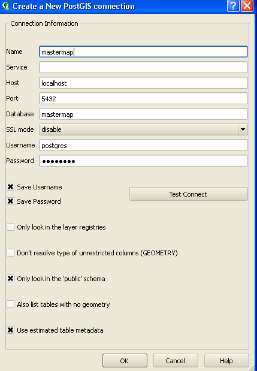

Loading, Styling and Displaying Ordnance Survey Mastermap Data
with Open Source Software
Jo Cook, Astun Technology / @archaeogeek
Starting Point: compressed gz files of Mastermap Data
End Point: Styled Mapping Data useable as vector (PostGIS or WFS) or raster (WMS)
What tools are we going to use?
Definitely...
- Python
- OGR
- PostGIS
And possibly...
- QGIS
- MapServer
- OpenLayers
How do these fit together?
Step 1
- Get Loader from GitHub and see the Loader wiki for installation instructions
- Get Dependencies (GDAL and Python via OSGeo4W, and lxml via easy_install)
- Get Data
- Configure the database
- Configure Loader
Step 2
Run Loader
python loader.py loader.configExamine results in database
Step 3
Connect to PostGIS database using QGIS
Use the mapserver plugin to style data and configure map file, or use the map file included with Loader
Step 4
View data as WMS in QGIS
Deep dive into Loader
Contributing
Loader is on Github so we value contributions!
Here's the URL again: https://github.com/AstunTechnology/Loader
Thanks :-)
Find this talk on github https://github.com/archaeogeek/aging_loaderdemo
Jo Cook, Astun Technology / @archaeogeek